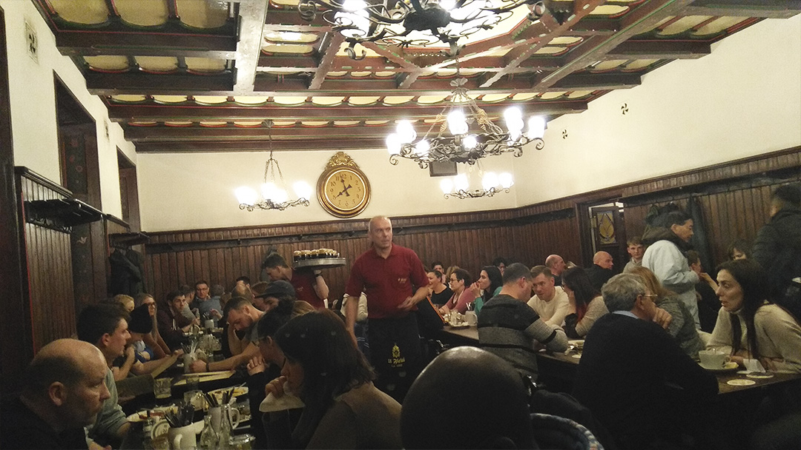
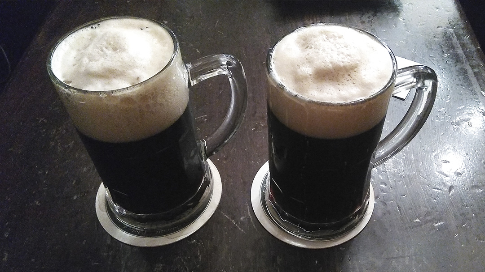
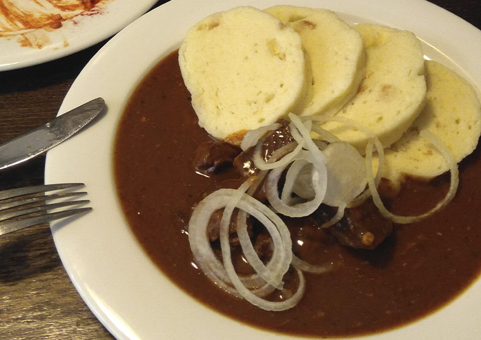
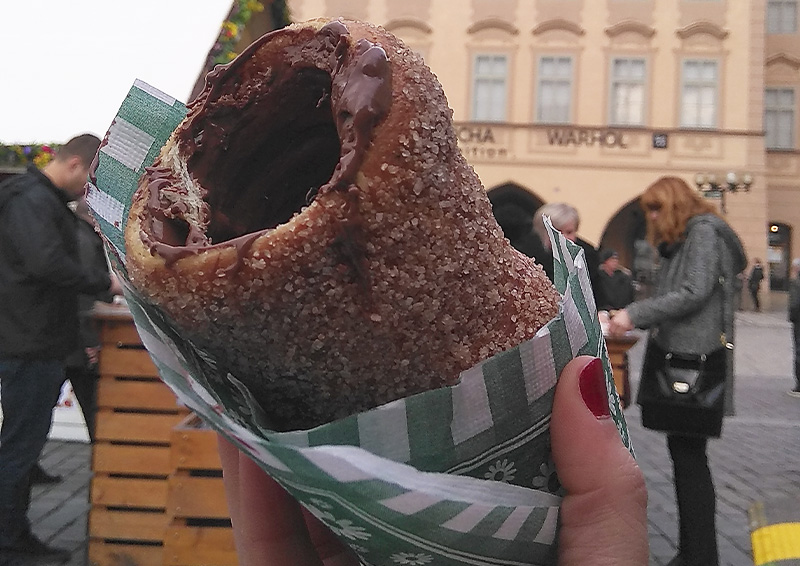
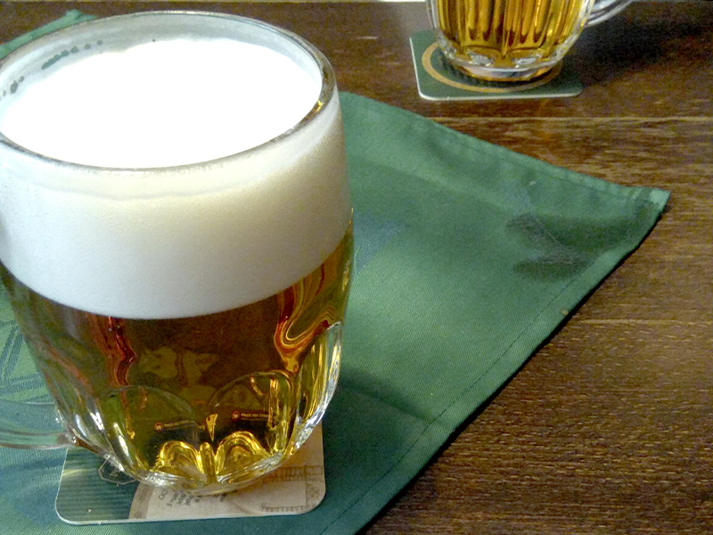
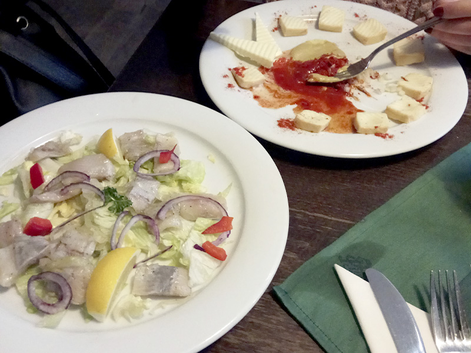
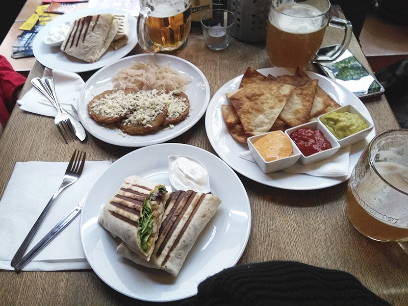

En este nuevo post me gustaría compartir con vosotros mi experiencia y viaje gastronómico en la capital de la República Checa: Praga.
Hace unos años tuve la suerte de poder viajar a esta ciudad que muchos definen como la más bonita de Europa. Y la verdad, que puedo estar deacuerdo con esta afirmación, ya que tiene un encanto especial. Me encantó su arquitectura, su ambiente medieval, los paseos por el casco antiguo y ciudad vieja, sus atardeceres a orillas del río Moldava lleno de cisnes y sobre todo... ¡su gastronomía!
Verás que en Praga existen muchísimas posibilidades. Cuando viajo, me encanta programar algún free tour por la mañana y dejar algún día reservado para visitar algún museo o exposición que me interese. En este caso visité el Museo Mucha, dedicado a la vida y obra del famoso pintor modernista checo, Alfons Mucha. Además, si viajas por el Este de Europa, te recomiendo hacer algún free tour sobre sus barrios judíos, son muy interesantes y nunca dejan indiferente a nadie. Si paseas por el barrio judío de la ciudad podrás ver cómo adaptan los restaurantes y locales a sus costumbres y sus espectaculares sinagogas.
Para abrir boca...
Si viajas a Praga, no puedes irte sin hacer una cata de cervezas. Existe una gran variedad y todo un mundo cultural alrededor de esta bebida. Hay evidencias de que la cervecería más antigua del mundo fue fundada aquí y aún hoy, existe una gran tradición de elaborar sus propias cervezas artesanales.
Sin duda, un buen ejemplo de ello sería la pivovar U Fleku, la cervecería más antigua de Praga.


Siempre está lleno de gente, turistas de todo el mundo se acercan a probar su cerveza artesanal y a disfrutar del buen ambiente que se crea a la hora de la comida y cena, gracias a la música en directo y a los atentos camareros que se empeñan en que no se te vacíe la jarra de cerveza.
En la imagen del comedor se puede ver a uno de los camareros con una enorme bandeja llena de pintas, y no, no necesariamente porque los clientes hayan pedido otra ronda. Aquí eres tú el que tiene que decirles basta, aunque es dificil, ya que está buenísima y a pesar de su color oscuro, no es para nada pesada.
Los mejores platos tradicionales de Praga

Goulash
El goulash es un estofado picante de carne y verduras que forma parte de los platos básicos de su cocina. Suele ser ternera, aunque también existen variantes con pollo o cerdo y suele ir acompañado de dumplings, que son esos trozos de pan blandito blanco.
Además, dependiendo del espesor que se le de, puede ser una sopa o un guiso. Sin duda, uno de los platos que sí o sí debes probar y de mis favoritos.
Tradelníky
A los más golosos este postre os va a encantar... se trata de un dulce elaborado con una masa de harina crujiente por fuera y blandita por dentro, se errollada en una barra de metal y mientras da vueltas sobre sí misma, se asa sobre brasas lentamente, cuando está dorado por fuera lo rebozan en azúcar, canela y nueces.
Puedes tomarlo así o ponerle algún topping como nutella, fresas o nata por encima. Es muy típico verlo en las plazas y mercadillos callejeros, ¿ya puedes oler el ambiente?

Recomendados
En este apartado os dejo una lista de los restaurantes que más me gustaron y donde sin duda repetería.
Tengo clarísimo que este restaurante sería mi TOP 1 del ranking.
Quizás llegues y no tengan una mesa libre, asi que lo más seguro es que tengas que esperar un ratito haciendo cola. Verás que no eres el único esperando, esto es buena señal, ¿no crees? Mientras, podéis esperar juntos tomando una Pilsner Urquell e ir haciendo hueco para lo que os espera, ya que los platos en este restaurante no van engañados. Te aseguro que no saldrás de ahí con hambre y que la espera merecerá la pena.


La primera foto son unas Pilsner Urkel, una de las cervezas y marcas más conocidas y comerciales de la ciudad.
Respecto a los entrantes, sinceremante, pedimos los más raros de la carta y fueron un éxito, el de la izquierda era un tipo ceviche y el plato del fondo era una mezcla de quesos, un chupito de cerveza y pimentón que había que machacar y remover todo junto para comer en tostas de pan. El camarero fue súper atento y nos lo preparó cómo se debía.
Un buen sitio para hacer un descanso y tomar algo.
Me encantó este local por su ambiente acogedor y por su temática de Pulp Fiction. La ubicación es buenísima, en pleno casco histórico, entramos a tomar algo, y al pedir una cerveza nos sirvieron el doble, ya que dio la casualidad de que justo estaban en la Happy hour, costumbre que es bastante habitual en estos países europeos a media tarde.

Además, allí me comí los mejores totopos caseros que he probado hasta ahora.
Un viaje totalmente recomendable
Sé que ya estás salivando y estás mirando tu agenda para empezar a planear tu próxima escapada a esta maravillosa ciudad, y no me extraña.
Si te has quedado con hambre de viajar y necesitas ayuda para planificar tu viaje, en el siguiente podcast te cuento unos tips que espero que te ayuden.